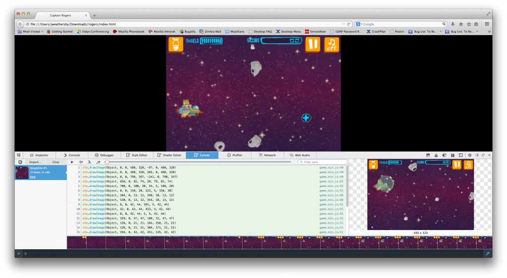
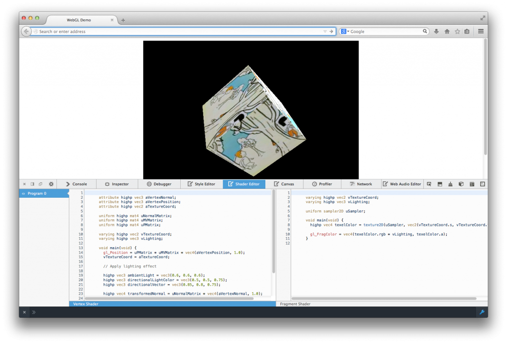
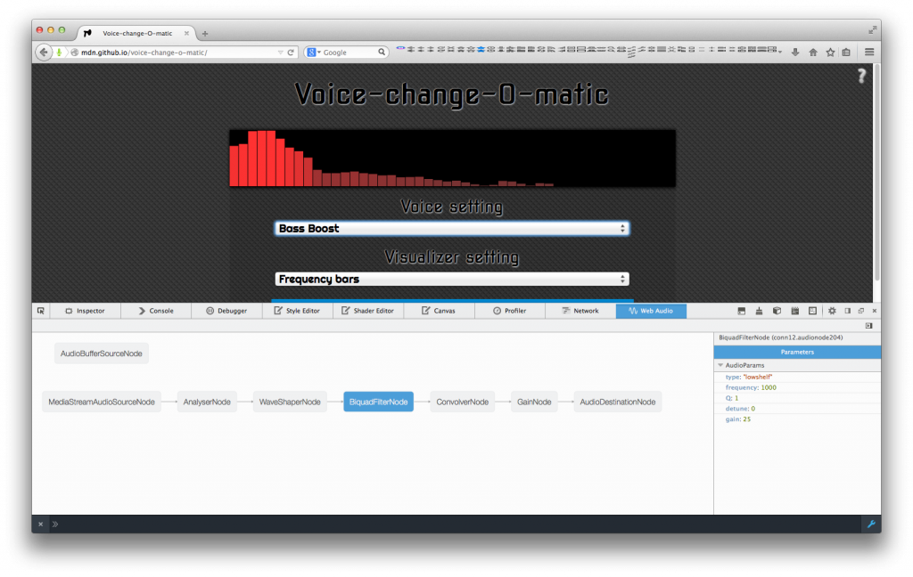

已釋出的 Firefox 31 具備多項新功能，可協助 HTML5 遊戲開發者進行編碼與除錯。此外，Mozilla率先開發之 asm.js 技術，亦首次應用於 Web 商業遊戲 ─《地城守護者 (Dungeon Defenders)》與《雲端入侵者(Cloud Raiders)》。此兩款遊戲都是透過 Emscripten 編譯器而跨平台編譯為 JavaScript。這類遊戲都足以證明 HTML5 可作為強大的遊戲平台。
如果你對 Emscripten 感興趣，可至 Emscripten wiki 取得相關資訊，或到 github 頁面取得程式碼，也能在 MDN 上找到 Emscripten 線上教學以利自己入門。如果你還是對 asm.js 的效能存疑，則可參閱《最新版 Firefox 提升的 asm.js 效能讓遊戲飛也似的執行！》以進一步了解。
本篇文章提到的資源均是由 Mozillian 所開發，讓你能順利撰寫 HTML5 遊戲並除錯。以下所列工具尚有缺漏。歡迎各位向我們建議任何有效資源，讓大家能更順利的開發遊戲。敬請直接於下方留言告訴我們。
該從何開始
在開發 HTML5 架構的遊戲時，開發者必須先決定要使用哪種編輯器；根據遊戲所使用的繪圖框架與遊戲引擎，也可能使用 Canvas 2d、WebGL、SVG，甚或 CSS。而這些大多數都取決於開發者本身的經驗，以及遊戲所將發行的平台。沒有其他文章會回答這些問題，讓我們先透過本文協助你入門。
遊戲開發者可找到的重要資源之一，就是在 MDN 上的 Games Zone。本專區提供一般遊戲的開發文章、展示程式、外部資源、範例等等。開發者在建構 HTML5 遊戲所應注意的某些 API，專區亦提供詳細解說。如音效管理、網路連線、儲存作業、圖形繪製作業。我們目前正努力豐富相關內容並升級整個專區。將來希望能納入最常見的遊戲場景、框架、系列工具等的內容與範例。
目前已有數篇部落格文章與 MDN 技術文件，可協助遊戲開發者入門。
工具
HTML5 開發者手邊絕對不會短缺工具。Mozilla 社群一直努力擴充 Firefox 開發者工具的功能，包含 JavaScript 除錯器 (JavaScript Debugger)、樣式編輯器 (Style Editor)、頁面檢測器 (Page Inspector)、程式碼速記本 (Scratchpad)、效能分析器 (Profiler)、網路監測器 (Network Monitor)、網頁主控台 (Web Console)。
除了上述這些工具之外，近期也才更新或介紹了某些強大工具，能協助開發者進行得更順利。
Canvas 除錯器 (Canvas Debugger)
Firefox 現有版本已經具備了 Canvas 除錯器功能。

用以產生幀像的所有 Canvas API，均可透過Canvas 除錯器進行追蹤。針對如繪畫元素或特殊著色器程式的特定呼叫，都會另外將之上色以清楚呈現。Canvas 除錯器不僅可用於 WebGL 架構的遊戲，也能用於 Canvas 2D 遊戲的除錯作業。在下圖中，你可看到繪至 Canvas 的每一幅圖像而構成動畫。你可點擊任何一行，直接找到負責該動作的 JavaScript。

若要進一步了解 Canvas 除錯器，可參閱 Introducing the Canvas Debugger in Firefox Developer Tools。
著色器編輯器 (Shader Editor)
在開發 WebGL 遊戲時，最好能趁應用程式執行期間，測試並修改著色器程式。而開發者工具中的著色器編輯器就能達到此要求。不需重新載入頁面，即可修改 Vertex Shader 與 Fragment Shader 程式；或可載入任一效果而直接觀察圖像輸出的效果。

若要進一步了解著色器編輯器，可參閱《Live editing WebGL shaders with Firefox Developer Tools》一文；另外本篇 MDN 文章內含多支即時編輯影片。
Web Audio 編輯器 (Web Audio Editor)
目前 Firefox 曙光版 (Aurora，即未來的 32 版本) 即提供 Web Audio 編輯器。此編輯器將以圖像呈現所有的音訊節點，以及在目前 AudioContext 中的連結。你可再檢視各個節點的特定屬性。

與 HTML5 的 Audio 標籤相較，Web Audio API 可提供更完整、更複雜的音訊建立、操控、處理功能。若要使用 Web Audio API，請先參閱《Writing Web Audio API code that works in every browser》，內含不同音訊節點的支援資訊。
若要進一步了解 Web Audio 編輯器，則請參閱本篇 Hacks 部落格文章與 MDN 文章。
看到這裡，你是不是已經對 HTML5 的遊戲開發躍躍欲試了呢？我們在《(上)》篇介紹了有關圖像與音訊的開發工具，你當然要繼續看過《HTML5 遊戲開發資源 (下)》介紹的 Firefox 開發者工具。